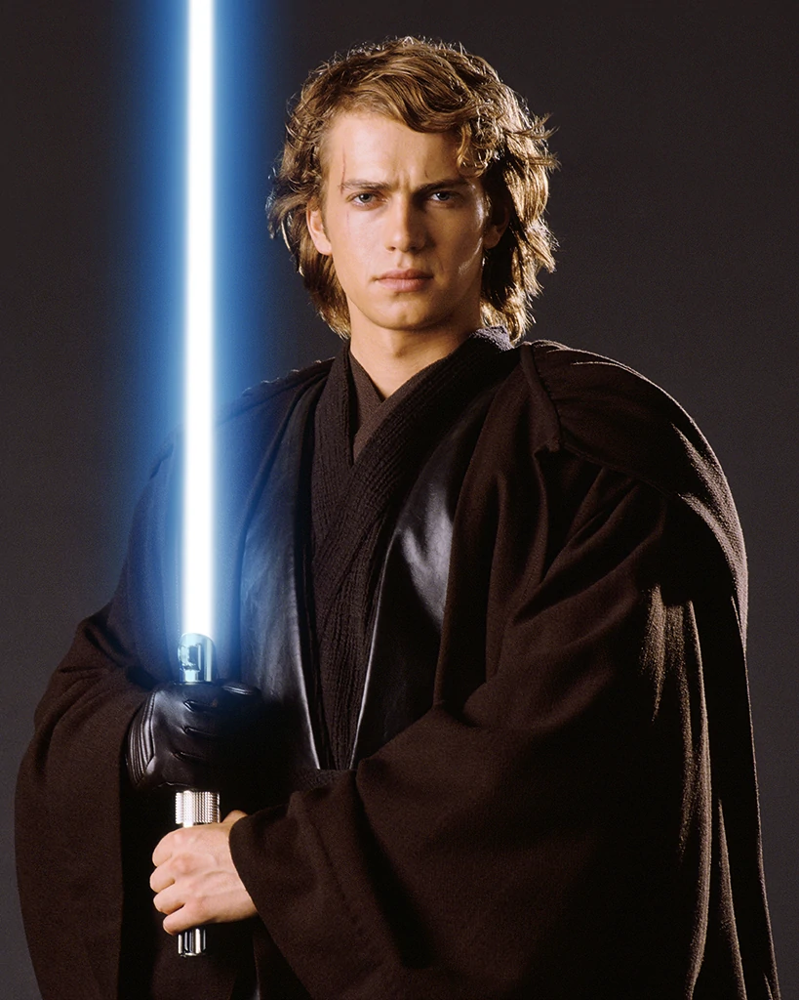
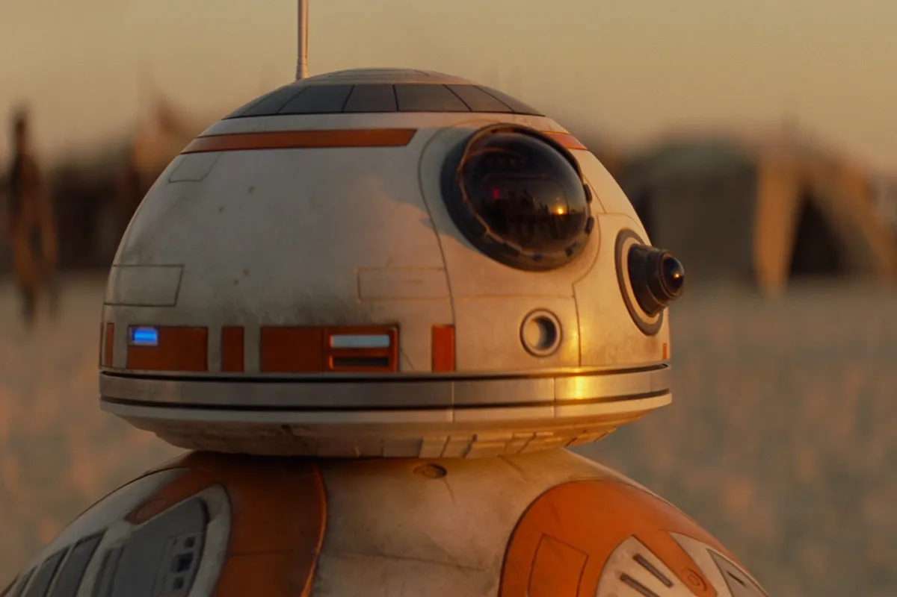
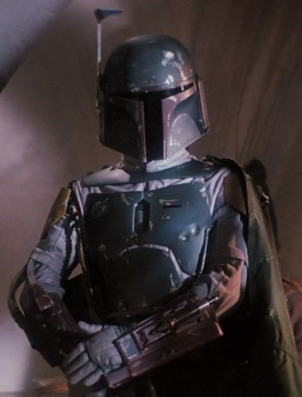
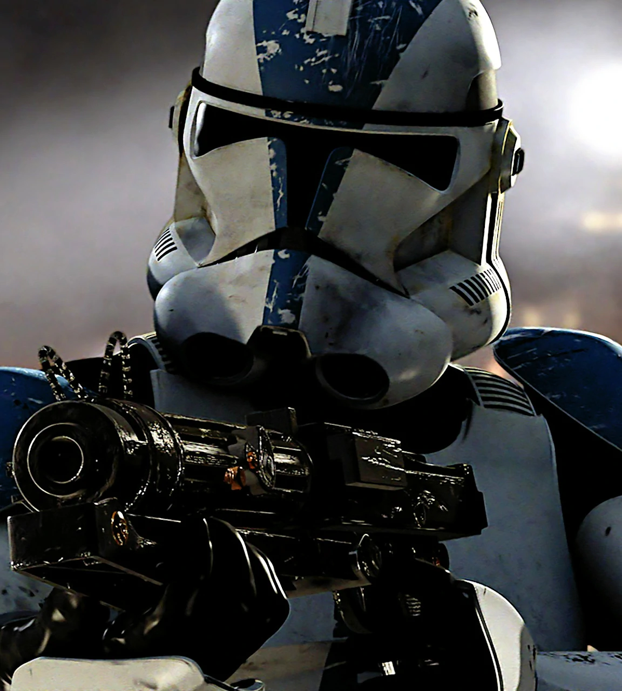
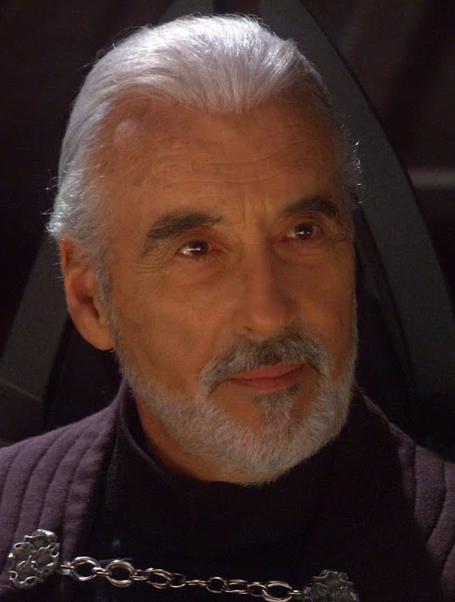

Get to know some of the prominent characters from the Star Wars movies! Below you'll find a selection of characters organized alphabetically. Each entry includes a photograph and a short description of the character. If you're interested in learning more about a character, I highly recommend visiting Wookieepedia to learn more.
Amilyn Holdo, also known as Vice-Admiral Holdo, was a human woman from the planet Gatalenta. She was a close friend of Leia Organa and participated in both the Galactic Civil War and the First Order-Resistance War. She is most known for her heroic sacrifice before the Battle of Crait. In order to protect a group of escaping Resistance shuttles, she jumped the Resistance flagship into hyperscape, going directly into the First Order fleet, destroying the fleet and herself and allowing the rebel fighters to escape.
 Anakin Skywalker was one of the most powerful Jedi to ever exist. He was a human male. He spent his childhood as a slave on the planet Tatooine until he was discovered by Jedi Master Qui-Gon Jinn. Qui-Gon and the Jedi Council believed Anakin to the "Chosen One" of prophecy who would bring balance to the force. Anakin fought in the Clone Wars alongside his fellow Jedi until he fell to the dark side and became Darth Vader. He would become Anakin Skywalker again right before his death after saving his son Luke Skywalker and defeating Emporer Palpatine.
 BB-8 was an astromech droid who belonged to Resistance pilot Poe Dameron. BB-8 was present and played a prominent role in the First Order-Resistance War, accompanying the main heroes on their adventures and saving the day on more than one occasion.
 Boba Fett was a legendary bounty hunter during the era of the Galactic Empire. He was a human male, specifically the unaltered clone of famous bounty hunter Jango Fett. He is recognized by his Mandalorian armor and his unique starship, the Slave I. One of his notable exploits was the capture of Han Solo, who he delivered frozen in carbonite to Jabba the Hutt. During a resuce of Han by Luke Skywalker, Leia Organa, Lando Calrissian, and Chewbacca, Boba fell into the deadly sarlacc pit, but he survived.
Clone troopers were the soldiers that served the Galactic Republic during the Clone Wars. The clones were, as the name suggests, clones of bounty hunter Jango Fett. They were made on the planet Kamino as part of a plan by Count Dooku and Darth Sideous to manufacture the war between the the Republic and the Confederacy of Independent Systems. Clones fought alongside Jedi Knights against Battle Droids and Sith.
 Count Dooku, aka Darth Tryanus, was a Jedi who left the order and became a Dark Lord of the Sith. He became the apprentice to Darth Sideous, aka Sheev Palpatine. Count Dooku is responsible for the creation of both the clone and droid armies. Count Dooku was a powerful force user who was very skillfull with a lightsaber. He was responsible for the deaths of many Jedi. He ultimately died at the hands of Anakin Skywalker.